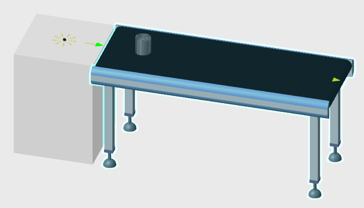
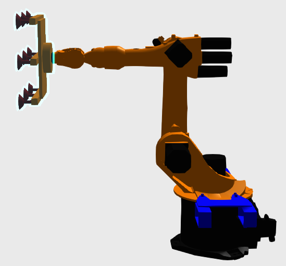
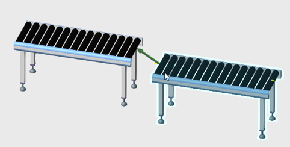
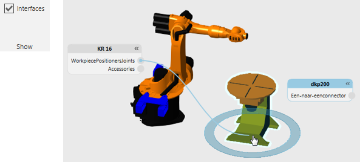

An interface type behavior is used to physically or remotely connect components.
Contents Hide
| Name | Description |
| One to One Interface | Allows a component to connect with another component. |
| One to Many Interface | Allows a component to connect with two or more components. |
In some cases, an interface is used to connect behaviors in one component to those in other components.

Part transferred from feeder to conveyor using an interface
In other cases, an interface is used to attach/detach component nodes, for example mounting a tool on the end of a robot arm and a detachable sensor on a conveyor path.

Tool plugged into robot and attached to robot mount plate node
For physical connections, use the PnP command to plug and play components with compatible interfaces, which are located at Frame features and indicated by arrows in the 3D world.

For remote connections, enable the Interfaces toggle and use the connection editors of components to wire abstract interfaces to one another in the 3D world.
